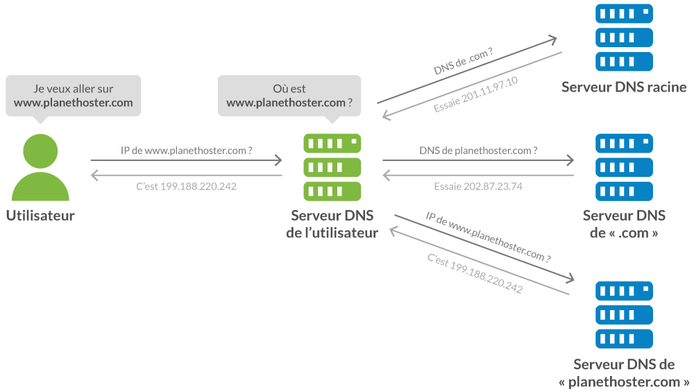
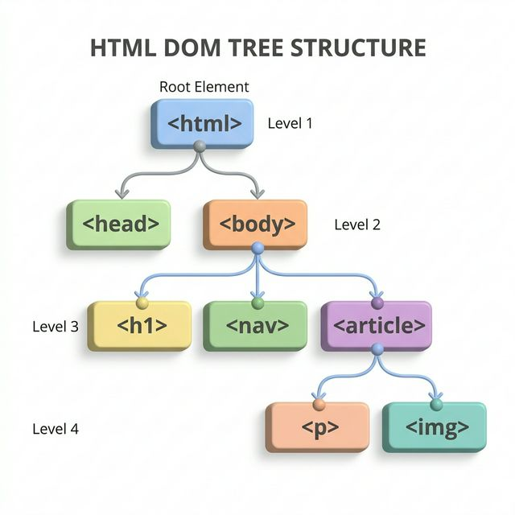

🌐 Thème : Le Web
I. Genèse et Philosophie du Web
1. Le Web : Une toile de liens
Le Web (abrégé de World Wide Web) est né en 1989 au CERN (Genève). L'inventeur Tim Berners-Lee cherchait un moyen pour que les scientifiques puissent partager leurs recherches sans dépendre d'un logiciel spécifique.
2. Un standard ouvert et gratuit
- En 1993, le CERN décide de placer le Web dans le domaine public.
- Contrairement aux réseaux propriétaires de l'époque, n'importe qui peut créer un site sans rien payer à une entreprise.
- Le W3C (World Wide Web Consortium) veille aujourd'hui à ce que le Web reste universel (interopérabilité).
⚠️ Ne confondons pas tout !
Quel est la différence entre le web et internet ?
⚠️ Ne confondons pas tout !
Il est essentiel de distinguer le contenant du contenu :
| Notions | Définition |
|---|---|
| Internet | L'infrastructure matérielle mondiale : câbles, routeurs, ondes, serveurs et protocole TCP/IP. |
| Le Web | Un service spécifique utilisant Internet pour échanger des documents reliés par des liens. |
À retenir : D'autres services utilisent Internet sans être le Web (ex: les emails, les jeux en ligne, le streaming vidéo direct).
II. L'Infrastructure Technique
Le Modèle Client-Serveur
Le Web repose sur un dialogue entre deux pôles : - Le Client : Votre navigateur (demande une page). - Le Serveur : Un ordinateur distant (fournit la page).
Le Protocole HTTP en détail
HTTP (HyperText Transfer Protocol) est le protocole qui régit le dialogue entre le navigateur (client) et le serveur web. On distingue deux types de messages :
| Message | Émetteur | Rôle |
|---|---|---|
| Requête | Le client (navigateur) | Demander une ressource |
| Réponse | Le serveur | Fournir la ressource demandée |
Le cycle Requête / Réponse
- Vous tapez
https://www.education.gouv.frdans votre navigateur. - Le navigateur envoie une requête HTTP GET au serveur.
- Le serveur traite la demande et renvoie une réponse HTTP avec la page HTML.
- Le navigateur interprète le HTML et affiche la page.
C'est ce qu'on appelle le modèle Client-Serveur.
Les codes de statut HTTP
Chaque réponse du serveur contient un code de statut à 3 chiffres :
| Code | Signification | Exemple |
|---|---|---|
| 200 | ✅ OK — Succès | La page est trouvée et renvoyée |
| 301 | ↪️ Redirection permanente | La page a changé d'adresse |
| 403 | 🚫 Forbidden — Accès interdit | Vous n'avez pas les droits |
| 404 | ❌ Not Found — Introuvable | La page n'existe pas |
| 500 | 💥 Internal Server Error | Erreur côté serveur |
III. L'URL
Qu'est ce qu'une url ?
III. L'URL
Chaque élément du Web possède une URL unique (Uniform Resource Locator).
1. Le Protocole (https://)
Il définit la méthode de communication utilisée entre le client et le serveur. Le "S" final (Secured) indique que les données sont chiffrées (cryptées) avant d'être envoyées, protégeant ainsi vos informations.
2. Le Nom de Domaine (www.education.gouv.fr)
C'est l'adresse lisible par l'humain qui identifie un serveur sur Internet. Il est composé de plusieurs parties lues de droite à gauche :
| Partie | Exemple | Rôle |
|---|---|---|
| TLD (extension) | .fr |
Zone géographique ou nature du site |
| Domaine de 2ème niveau | gouv |
Nom enregistré auprès d'un registrar |
| Sous-domaine | www ou education |
Subdivision du domaine principal |
Les types d'extensions (TLD)
- Géographiques :
.fr(France),.de(Allemagne),.jp(Japon) - Génériques :
.com(commercial),.org(organisation),.net(réseau) - Institutionnels :
.gouv.fr(gouvernement français),.edu(éducation, USA) - Nouveaux TLD :
.app,.shop,.blog
À retenir : Un nom de domaine doit être acheté et enregistré auprès d'un registrar. Il est unique au monde.
Le DNS
Les ordinateurs ne communiquent que via des adresses IP (ex: 142.250.7.14).
Le DNS (Domain Name System) agit comme un annuaire téléphonique mondial : il traduit le nom de domaine lisible en adresse IP compréhensible par les machines.
le DNS en action

4. Le Chemin
Le Chemin (/programme-snt.html)
Il indique l'emplacement précis du fichier dans l'arborescence des dossiers du serveur.
exemple: https://www.prof-leal.fr/SNT/Web/sommaire/
5. Les Paramètres
Les Paramètres (?lang=fr)
Les paramètres permettent d'envoyer des informations au serveur directement dans l'URL pour personnaliser la réponse.
- Ils commencent toujours par le symbole
? - Ils sont formés de paires
clé=valeur - On peut en chaîner plusieurs avec le symbole
&
Exemple de décomposition
| Paramètre | Valeur | Signification |
|---|---|---|
v |
dQw4w9WgXcQ |
Identifiant de la vidéo |
t |
30 |
Démarrer à la seconde 30 |
À retenir : Les paramètres sont visibles dans l'URL. Il ne faut jamais y faire passer un mot de passe !
IV. La Structure des Données : Le HTML
1. Séparation Fond / Forme
Pour construire une page, on utilise deux langages distincts : - HTML (Structure) : Identifie la nature du contenu (Ce que c'est). - CSS (Présentation) : Définit l'apparence (À quoi ça ressemble).
2. La logique des Balises (Tags)
<p>Ceci est un paragraphe.</p>
<p> : Balise ouvrante.
* Ceci est... : Le contenu sémantique.
* </p> : Balise fermante (indispensable !).
3. L'Arborescence : Un arbre de données
Une page web n'est pas une simple suite de texte ; c'est une structure hiérarchique appelée DOM (Document Object Model).
La logique de l'imbrication
- Comme des poupées russes, une balise est placée à l'intérieur d'une autre.
- On parle de relation Parent / Enfant : une balise "englobante" est la parente des balises qu'elle contient.

Exemple de lecture : La balise
<html>est la racine de l'arbre. Elle a deux enfants :<head>et<body>. Le titre<h1>est un enfant de<body>.
Les balises sémantiques indispensables :
<h1>à<h6>: Les titres hiérarchisés.<a>: Les liens (le cœur du Web).<img>: Les images (insérées via un liensrc).
`) avec le nom de l'élève.
2. Un lien hypertexte (``) vers le site du lycée.
**Questions de conception :**
1. Dans quelle grande section du document (Head ou Body) allez-vous placer ces éléments ?
2. Dessinez ou listez l'**imbrication** (l'arborescence) de ces balises pour respecter les standards du W3C.
3. **Défi :** Où placeriez-vous la balise ` ` pour qu'elle apparaisse juste avant le lien ?
` pour qu'elle apparaisse juste avant le lien ?
V. La Mise en Forme : Le CSS
Le CSS (Cascading Style Sheets) est le langage qui définit l'apparence de la page.
1. La séparation du fond et de la forme
- HTML = La structure (ex: "ceci est un titre").
- CSS = Le style (ex: "ce titre doit être bleu et en gras").
2. La syntaxe du CSS
On cible un élément (le sélecteur) et on lui applique des propriétés.
h1 {
color: blue; /* Couleur du texte */
font-size: 24px; /* Taille de la police */
text-align: center; /* Alignement */
}
VI. Moteurs de recherche et Sécurité
Donnez des exemples de moteurs de recherche.
exemple de moteur de recherche :
- Bing
- Qwant
- Ecosia
Qu'est-ce qu'un moteur de recherche ?
1. Qu'est-ce qu'un moteur de recherche ?
C'est un outil qui permet de trouver des informations parmi des milliards de pages web. Contrairement à une recherche directe, le moteur ne cherche pas "en direct" sur tout le Web, mais dans sa propre mémoire.
Les 3 étapes du moteur :
- L'exploration (Crawling) : Des robots parcourent les liens pour découvrir de nouvelles pages.
- L'indexation : Les pages sont analysées et stockées dans une immense base de données.
- Le classement (Ranking) : Le moteur décide quelle page est la plus pertinente pour vous.
Comment fonctionne un moteur de recherche ? Comment trouver un site pertinent ?
2. L'algorithme PageRank
Comment Google décide-t-il quelle page est n°1 ? C'est un vote de popularité par les liens : Plus une page reçoit de liens entrants provenant de sites eux-mêmes "importants", plus son PageRank augmente.
3. Les Cookies
Petits fichiers textes déposés sur votre ordinateur par les serveurs. - Utiles : Mémoriser votre panier d'achat ou votre connexion. - Publicitaires : Suivre votre navigation de site en site (tracking). - RGPD : Obligation pour les sites de vous demander votre consentement.
Quiz de Synthèse / Kahoot
https://play.kahoot.it/v2/?quizId=44c0ad0a-f379-40ea-990f-1f01e209bf72&hostId=1f7976de-31a1-4e76-bde3-438c3849588b